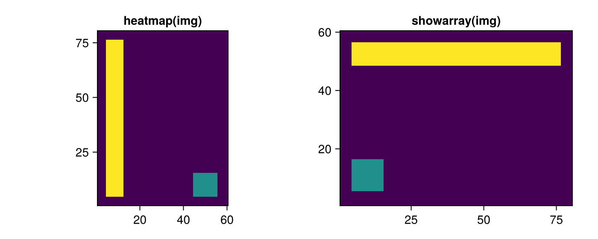
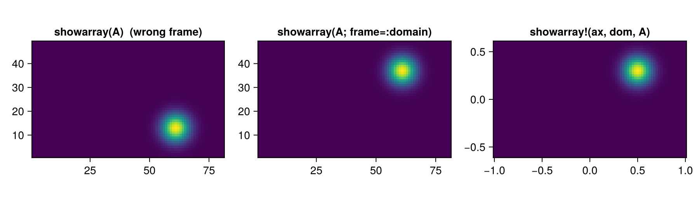
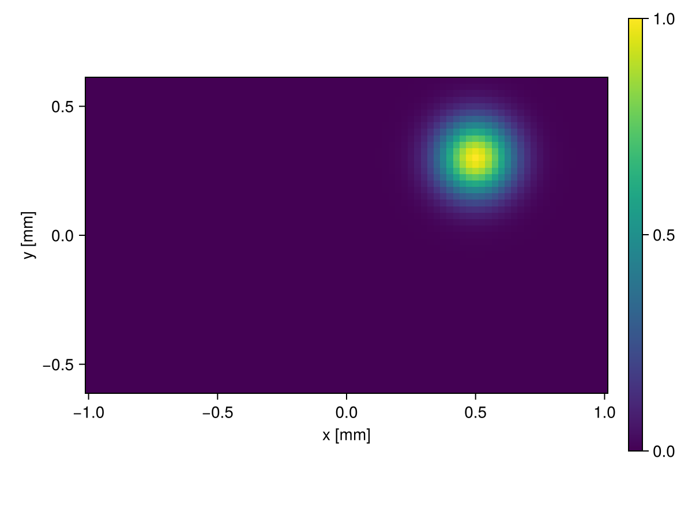

using PhasePlots
using CairoMakie
CairoMakie.activate!(; type="png")Array orientation
Makie's heatmap(A) puts the first array index on the horizontal axis. For a matrix that means the rows of A are drawn as columns of the picture, so a plain heatmap shows every 2D array rotated. PhasePlots fixes this once for all its plotting functions: x points to the right and y up. Two array conventions are supported, chosen with the keyword frame.
Images: frame = :image (default)
An array read from an image file (a camera frame, an interferogram) is indexed A[row, col] with row 1 at the top. Here is such an "image": a bright bar along its top edge and a small square in the bottom-left corner.
img = zeros(60, 80)
img[5:12, 5:76] .= 1 ## top bar
img[45:55, 5:15] .= 0.5 ## bottom-left square
size(img) ## 60 rows, 80 columns(60, 80)A plain heatmap shows the bar on the left, showarray shows the image as it should look.
fig = Figure(; size=(700, 280))
ax1 = Axis(fig[1, 1]; title="heatmap(img)", aspect=DataAspect())
heatmap!(ax1, img)
ax2 = Axis(fig[1, 2]; title="showarray(img)", aspect=DataAspect())
showarray!(ax2, img)
fig
showarray(img) creates its own figure and returns (fig, ax, hm), showarray!(ax, img) draws into an existing axis. Internally the array is rotated with rotr90; the keyword rot sets the number of 90° clockwise rotations.
Sampled functions: frame = :domain
A function f(x, y) sampled on a grid with ascending coordinates is usually stored as A[j, i] = f(x[i], y[j]): the row index runs along y and row 1 is the smallest y. This is the convention of SampledDomains.CartesianDomain2D and of the other Phase.jl packages. Such an array must be transposed, not rotated, which is what frame=:domain does.
As a test function take a Gaussian spot centred at x = 0.5, y = 0.3: it must appear right of the centre and above it.
xr = range(-1, 1; length=81)
yr = range(-0.6, 0.6; length=49)
A = [exp(-((x - 0.5)^2 + (y - 0.3)^2) / 0.02) for y in yr, x in xr]
size(A) ## (length(yr), length(xr))(49, 81)If A is passed together with the domain, showarray takes the coordinates from it and labels the axes. The domain is any object with fields xrange and yrange, for example a CartesianDomain2D; here a NamedTuple is enough.
dom = (xrange=xr, yrange=yr)
fig = Figure(; size=(900, 260))
ax1 = Axis(fig[1, 1]; title="showarray(A) (wrong frame)", aspect=DataAspect())
showarray!(ax1, A)
ax2 = Axis(fig[1, 2]; title="showarray(A; frame=:domain)", aspect=DataAspect())
showarray!(ax2, A; frame=:domain)
ax3 = Axis(fig[1, 3]; title="showarray!(ax, dom, A)", aspect=DataAspect())
showarray!(ax3, dom, A)
fig
With the domain the axes show the physical coordinates. showarray(dom, A) also sets the labels x and y; replace them with the axis keyword:
fig, ax, hm = showarray(dom, A; axis=(xlabel="x [mm]", ylabel="y [mm]"))
Colorbar(fig[1, 2], hm)
fig
The same frame keyword is accepted by showphase, showphasetight and plot_heatmaps_table.
This page was generated using Literate.jl.